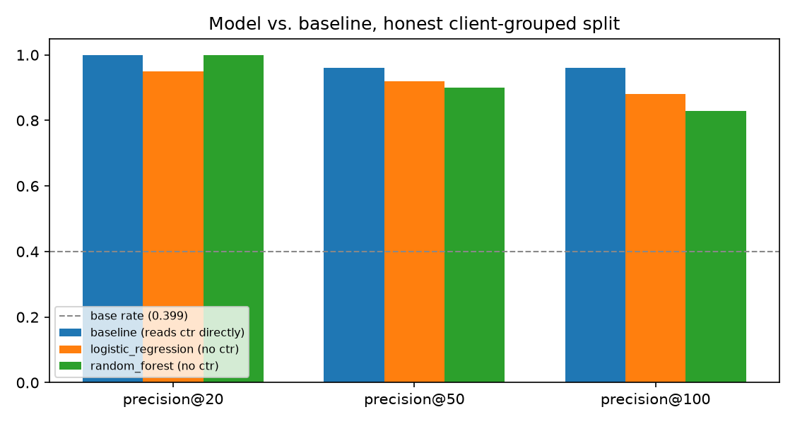
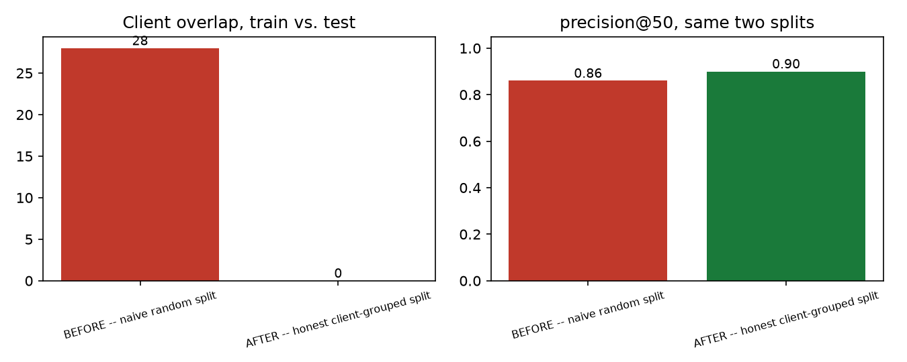
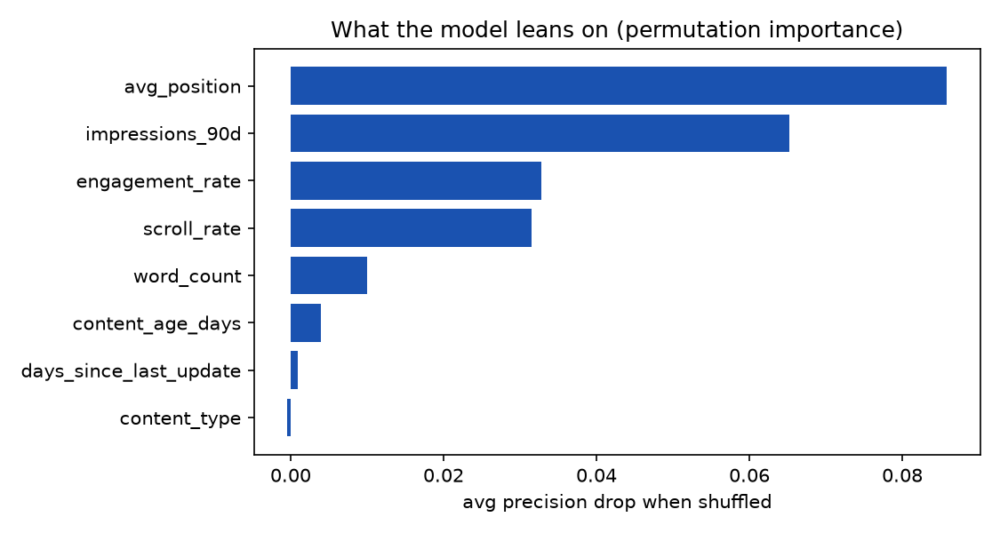
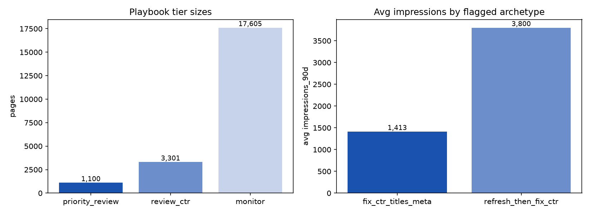

Can Structural Signals Flag Low-CTR Pages Without Reading CTR?
Search-visible pages sometimes underperform click-through-rate (CTR) expectations for their content type, and a reviewer triaging thousands of pages needs to know which ones to check first — this paper asks whether structural and visibility signals (position, impression volume, content type, depth, freshness, engagement) can flag CTR risk without ever reading CTR itself. Using FlyRank's anonymized 30,000-row content dataset (22,006 active pages, 32 pseudonymized clients), Logistic Regression and Random Forest were trained on seven structural features and evaluated against a transparent hand-rule baseline on an honest, client-grouped holdout split. Random Forest ties the baseline's top-20 precision (1.00) with zero access to CTR and stays well clear of the 0.399 base rate through precision@100 (0.83); a deliberate leakage-confession test and a split-honesty test both confirm the evaluation itself is sound, not just the headline number. The result is a ranked, reason-coded action playbook intended as decision-support for a human content reviewer — not a causal claim, not a statement about Google's ranking algorithm, and not built for unsupervised automation.
Introduction
Content that ranks well in search quietly decays or underperforms, and most teams notice too late — after impressions and clicks have already trended down for weeks. Out of thousands of published pages, the operationally valuable question is not "is this page good?" but "which page should a human check first?" — a ranking and triage problem on messy, real search data, exactly the kind of problem where a learned model can outperform a fixed rule once signals get numerous and tangled.
FlyRank's own product already computes rule-based flags for this
(needs_ctr_fix, a composite health score) — hand-written thresholds that work,
but that a data export deliberately never includes, on purpose: a model that learns to
reproduce an existing decision has discovered nothing, it has just copied the rule. This
paper instead asks the harder, more useful version of the question: using only observed
signals — never a product decision, never CTR itself — can a model still find pages worth a
human's attention?
Data
Release: the FlyRank ML Internship starter dataset,
content_refresh_anonymized.csv — 30,000 rows × 44 columns, one row per
pseudonymized content item, 32 pseudonymized clients, metrics aggregated over a trailing
90-day window ending at export time. The file ships pre-anonymized: no client names, URLs,
titles, or raw keywords appear anywhere in it.
Filter: impressions_90d ≥ 100, leaving 22,006 active
pages — pages with negligible search visibility don't carry a trustworthy CTR signal to
evaluate in the first place.
Excluded, and why
ctr— deliberately excluded from every model feature set. It defines the label this paper predicts; including it would turn the "model" into a lookup table.trend_pct,trend_direction— this dataset's other label-derived trap (they define a separate label used elsewhere in this project). Not relevant to this paper's label, and confirmed absent regardless.content_id,client_id— pseudonymous identifiers, used only to group the train/test split, never as model inputs.
Methodology
Label
low_ctr_for_type = 1 when a page's CTR sits at or below the 40th percentile of
CTR for its own content_type, with the threshold learned from the training
split only. CTR in this dataset is heavily zero-inflated (27–72% of rows are exactly 0,
depending on type), so the 25th percentile is 0 for every type and a strict "below" test
never separates any rows — the 40th percentile with "at or below" is the lowest cut that
actually does.
Features
Seven numeric — avg_position, impressions_90d,
word_count, content_age_days, days_since_last_update,
engagement_rate, scroll_rate — plus one categorical,
content_type. ctr excluded by design.
Baseline
A transparent hand-rule: visibility_score × position_reachable_gate ×
ctr_gap_vs_own_type_median, one reason code, one action threshold. Because the
baseline is a rule rather than a fitted model, it is allowed to read ctr
directly — a distinction that matters for reading the Results section honestly.
Validation design
Every split in this paper is grouped by client_id
(GroupShuffleSplit, 75/25, seed 42), never a random row split. A random split
lets pages from the same client land in both train and test, letting a model partly
memorize client-level patterns instead of learning something that generalizes to a client
it has never seen.
Leakage checks
- Train-with / train-without: add
ctrback as a feature and confirm precision jumps to a suspiciously perfect 1.00 at every K, then remove it and confirm the honest, lower number returns. - Split-honesty test: compare a naive random split against the grouped split, checking client overlap between train and test directly — not just trusting whichever metric happens to look better.
Results

| Model | P@20 | P@50 | P@100 |
|---|---|---|---|
Baseline (reads ctr directly) | 1.00 | 0.96 | 0.96 |
Logistic Regression (no ctr) | 0.95 | 0.92 | 0.88 |
Random Forest (no ctr) | 1.00 | 0.90 | 0.83 |
Read honestly, not at face value: the baseline's near-perfect precision looks like a win, but it is close to circular — it directly reads the exact signal the label thresholds. The genuinely interesting result is that Random Forest, given none of that direct signal, ties the baseline at the top of the ranked list (precision@20 = 1.00) and stays well clear of the 0.399 base rate through precision@100. Logistic Regression trails at low K but wins at precision@100 (0.88 vs. 0.83) — reported as the finding it is, not smoothed away.
Is the evaluation itself trustworthy?

The leakage confession
| Feature set | P@20 | P@50 | P@100 |
|---|---|---|---|
Honest — ctr excluded | 1.00 | 0.90 | 0.83 |
Leaky — ctr included | 1.00 | 1.00 | 1.00 |
Adding ctr back pushes precision to a flat 1.00 at every K — the textbook
"suspiciously perfect" symptom of a label-derived feature — confirming the test harness
correctly detects leakage when it's deliberately present.
What the model leans on

avg_position and impressions_90d carry most of the signal.
That's consistent with an earlier signal-audit finding in this project: CTR does not fall
smoothly as position worsens — it actually peaks around position 4–5, not position
1 — which is exactly why position is used here as a coarse reachability gate rather than a
linear score.
Limitations
- Observational, not causal. Every number here comes from one static snapshot. Nothing supports "changing X will cause Y" — only "pages that look like this, in this data, tend to also look like that."
- Not a claim about Google's ranking algorithm. This model predicts a property of FlyRank's own portfolio data, not search-engine behavior.
- Single-split evaluation. Every headline metric comes from one client-grouped split (seed 42). A fully rigorous claim would average several grouped splits; this paper does not.
- Client-level generalization is unproven beyond the 8 held-out test clients — a portfolio-level average can still mask per-client variation.
- The 40th-percentile label threshold fits this dataset's zero-inflation shape. It would need re-deriving, not reusing, on a materially different export.
- Position's relationship to CTR is non-monotonic in this data — a reader applying these results to a different search vertical should re-verify that, not assume it.
Ranked recommendations
The validated model, refit on all 22,006 active pages, produces a ranked queue split into three tiers:
Within the two flagged tiers, a transparent rule — not a second model — splits by
days_since_last_update (threshold: 90 days, chosen from this dataset's own
distribution): pages untouched 90+ days get refresh_then_fix_ctr;
recently-updated pages get fix_ctr_titles_meta — a
title/snippet problem, not a freshness one.

Human review, before acting on any flagged row
- Is the low CTR actually a title/snippet problem, or is a SERP feature suppressing clicks regardless of title quality? The model has no visibility into SERP layout.
- Does this page cannibalize traffic with a sibling page from the same client?
- Is
content_typecorrectly tagged? Scoring compares a page to its own type's typical CTR — a mistagged row is scored against the wrong peer group. - For
refresh_then_fix_ctrrows: has search intent for this query shifted enough that a refresh wouldn't help regardless of freshness?
- Auto-publishing any title, meta description, or content change from the score alone.
- Auto-redirecting, merging, or deleting flagged pages.
- Using the model score as the sole input for evaluating a writer's performance.
- Treating
priority_reviewas proof a page is broken — it is a review priority, not a verdict. - Feeding this queue into downstream automation without a human sign-off step.
Reproducibility
Every number and figure in this paper is regenerated by one notebook, from a fresh clone, with a fixed seed:
The full weekly trail this capstone builds on, in order:
- Data contract — grain, verified queries, the leakage trap demonstrated on the warehouse release
- Baseline + signal audit — the two signal checks and the hand-rule this paper's model is measured against
- Model — Logistic Regression + Random Forest, first pass
- Validation audit — the honest-split before/after and the leakage confession test
- Action playbook — tiers, reason codes, the decay/refresh archetype split
- Capstone — this paper's own source notebook, re-deriving everything above in one run
Acknowledgments & data credit
Built on the FlyRank ML Internship dataset — an anonymized, public-safe slice of real production search data, provided for this internship program. Thanks to the FlyRank ML track for the framework this capstone follows: baseline before model, honest splits before headline numbers, and limitations written by the author before a reader has to find them.